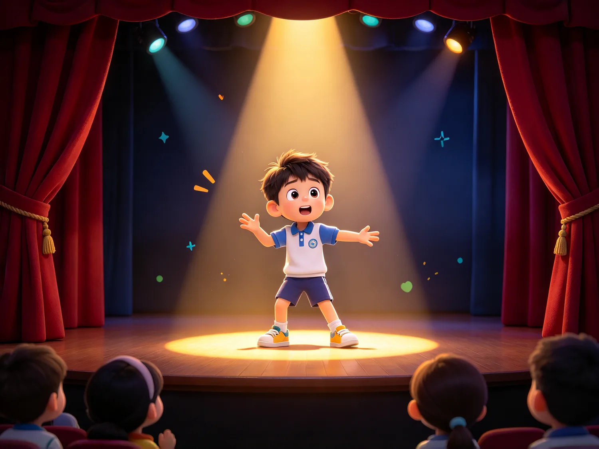
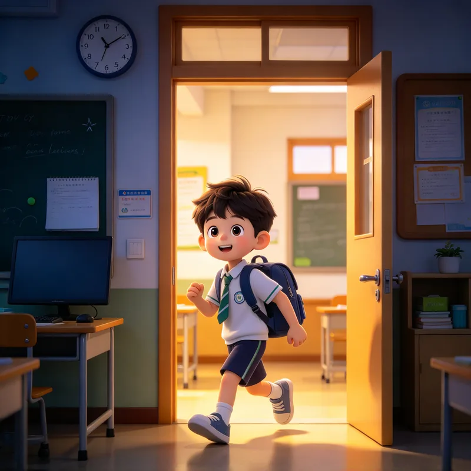
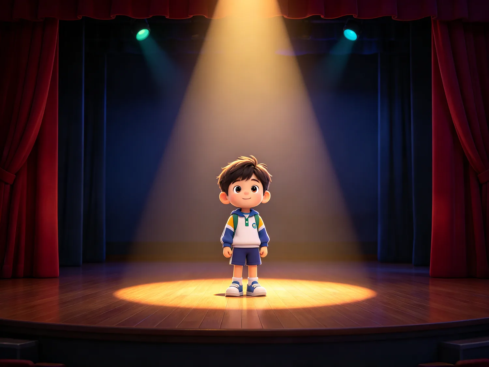
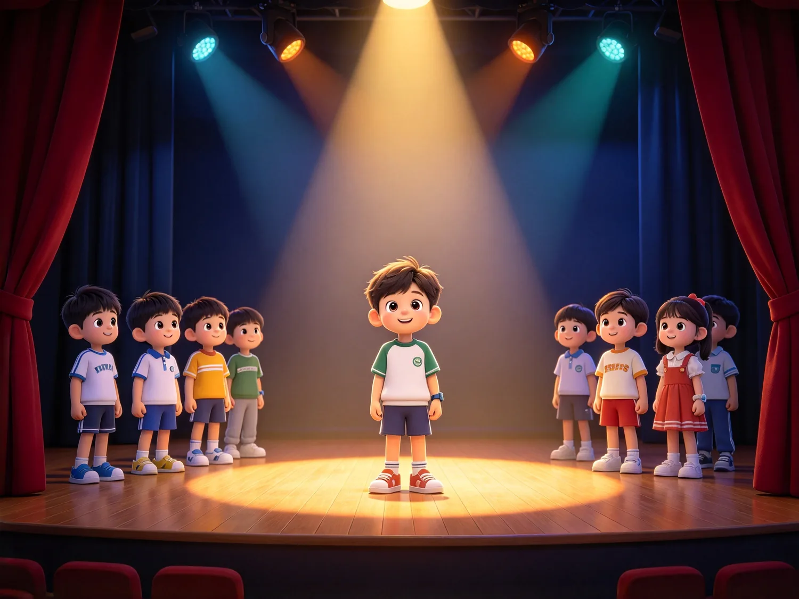
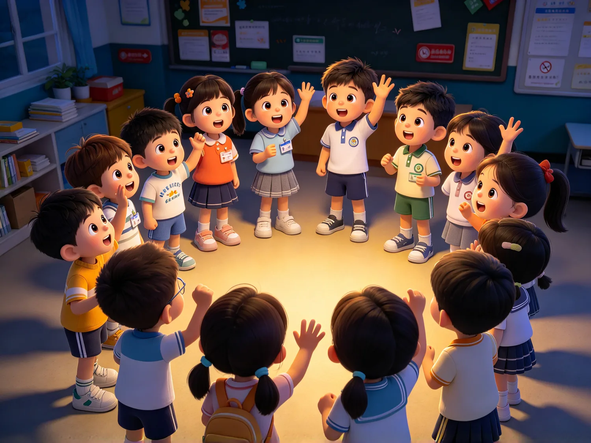

第 1 節

身體先醒
眼睛要打開
每個人都要上台一次
這裡沒有觀眾席。
由你們自己說出來

因為大家都在等
台上一個人說話時，要有人接
這裡每個人都要敢做傻事
6 分
「說出你的名字，做一個動作。我們一起學他。」
目標記名字、破除緊張。
怎麼做站成大圓圈。每人說出名字並做一個動作，全體一起模仿那個動作、一起叫出他的名字。老師先示範一次，動作要大、要慢。
觀察誰第一個敢做；誰的聲音最小。
如果有人不肯做，先請他當計時員或觀察員，下一輪再請他進來。
6 分
「跟著我，慢一點，不要快。」
目標喚醒身體、進入狀態。
怎麼做由頭到腳逐個關節活動：頸 → 肩 → 手腕 → 腰 → 膝 → 腳踝。之後全身抖 10 秒、靜止 5 秒，做兩次。每一節都數拍子，讓全體同一時間做同一個關節。
觀察誰身體僵硬；誰容易喘。
如果有人身體不適，跳過抖動與急停，改為靜態伸展。
6 分
「行——停。停的時候，眼睛看著我。」
目標空間感、專注、聽指令。
怎麼做在課室內走動。拍手＝立即停格；再加速度（慢／中／快）；再加方向。最後加一條：見到人就要點頭打招呼。停格的標準是全身真的不動、眼睛看老師。
觀察空間意識；收不放得住。
如果太吵收不住，直接玩停格，不要講道理，用遊戲收回來；場地太窄就改成原地踏步與半場移動。
7 分
「不要用喉嚨喊，用肚子。」
目標普通話聲音基線。
怎麼做鼻吸 4 秒、口吐 6 秒，手放肚子上，感覺肚子鼓起來、凹下去。之後做唇舌操（彈唇、舌頭左右、繞舌頭）。最後用一句「我是×××」向對面牆壁說，讓最後一排都聽得到。
觀察音量、咬字、聲調。
如果有人喊到喉嚨痛，立刻停下來回到呼吸，這節不糾正發音，只取基線。
現在，問題來了——
先不要答。等一等。

1空的舞台
2加上一個人
3加上他說一句話
4加上有人在看
這就已經是戲劇了。

有人在看，就不是練習了。
我們要做的是右邊那一欄。
拿掉任何一樣，就不是戲
人物
故事
觀眾
8 分
「錯了不要緊，我們一齊重來。」

目標反應、專注、群體感。
怎麼做數字報數（漏數或重數就全組重來）；或傳動作（一人做動作，全體接力）。重來的時候不要責備，只講「我們一齊重來」，愈快回到第 1 個數字愈好。
觀察誰能接住；誰會怪別人。
如果人數太多一輪太久，分成兩圈同時報數。
8 分
「不用講話，用眼睛。」
目標觀察、跟隨、非語言表達。
怎麼做兩人一組，一人領動作一人鏡像，30 秒後交換。第二輪加入情緒（開心／擔心）。提醒大家：鏡子要慢、要看著對方的眼睛，不要猜，要跟。
觀察誰能放下自己、跟住別人。
如果有人找不到伴，老師先跟他一組示範一輪。
8 分
「數到三，定住，不許動。」
目標合作、畫面感、第一次「演」。
怎麼做三人一組，聽題目（例：等車、吃飯、吵架），數到三就要做出一個靜止不動的畫面。各組輪流展示，其他人做觀眾，看完拍手。
觀察有沒有想法；能不能協商。
如果時間不夠，省掉輪流展示，只做一組示範。
8 分
「我們要像一個人。」
目標群體合一、第一次成功。
怎麼做全體圍圈，一起做同一個動作、同一句聲音（例：一齊踏一步加一聲「嘿」），做到整齊為止。先慢、後快，做得到就再加一句。收尾要停在全體靜止的那一秒。
觀察那一刻的氣氛。
如果一直做不到整齊，先用呼吸把節奏統一，再出聲。
今天我發現自己……
目標反思、收整這節課。
怎麼做圍圈，每人一句：「今天我發現自己……」一句就夠，不追問、不評價，聽完就拍手。之後預告下一堂做什麼、要帶什麼。
觀察誰說得具體。
下一節